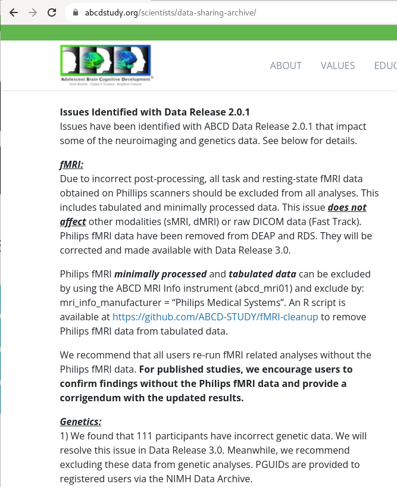
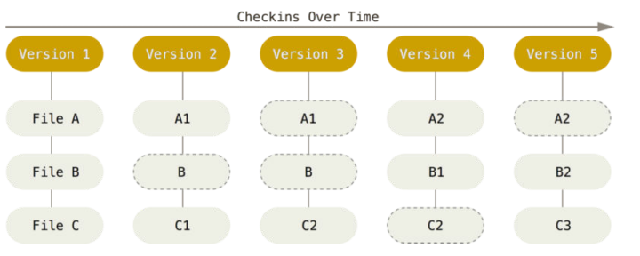
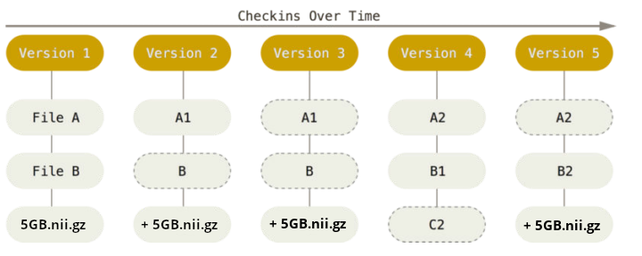
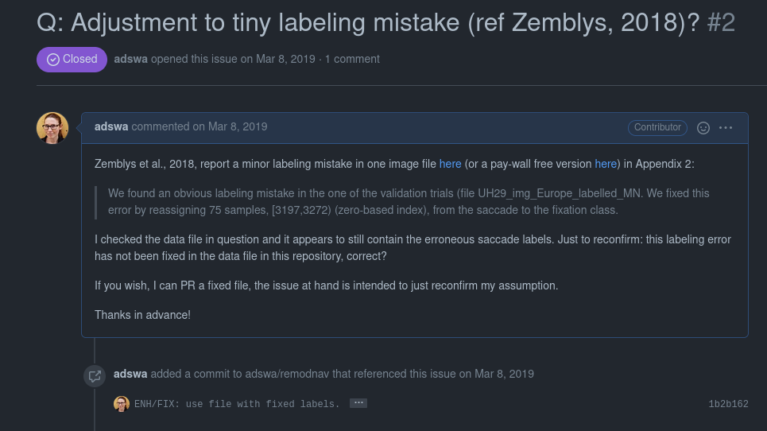
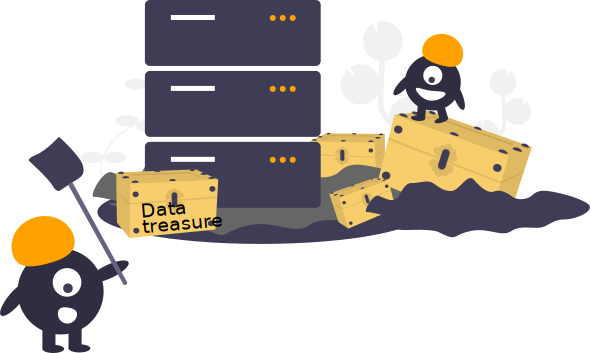
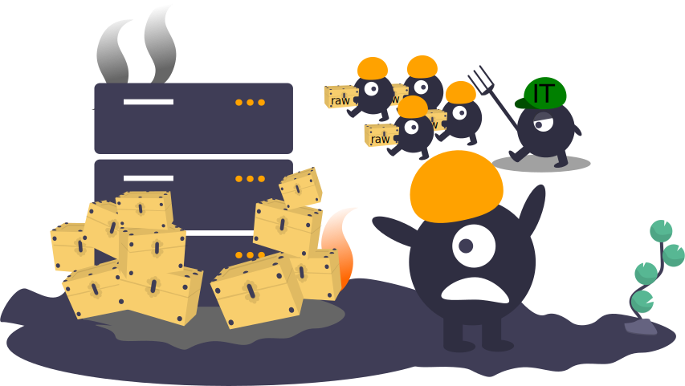
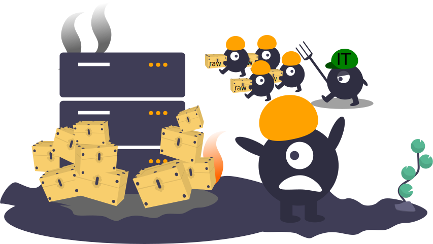
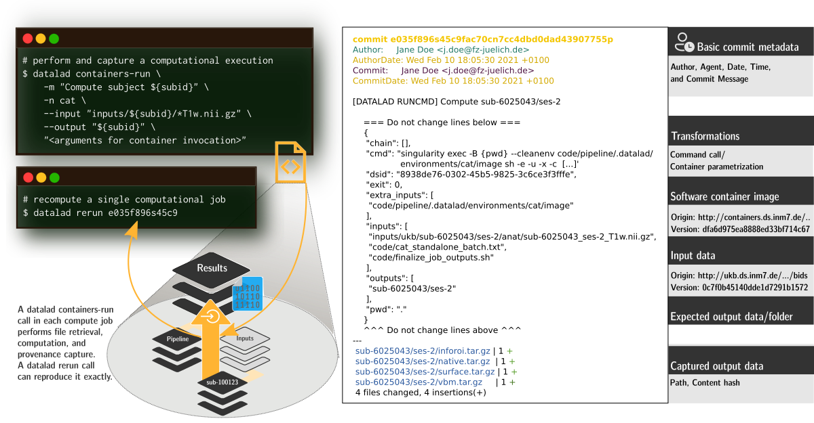

Data Management for Neuroimaging
üë©‚Äçüíªü뮂Äçüíª
with DataLad
|
Adina Wagner @AdinaKrik |
|
|
|
Psychoinformatics lab,
Institute of Neuroscience and Medicine (INM-7) Research Center Jülich |
Slide sources: https://github.com/datalad-handbook/datalad-course/
Slide archive: doi.org/10.5281/zenodo.6880616
Common problems in science
You write a paper & stay up late to generate good-looking figures,
but you have to tweak many parameters and display options.
The next morning, you have no idea which parameters produced which
figures, and which of the figures fit to what you report in the paper.


Illustration adapted from Scriberia and The Turing Way
https://co.pinterest.com/pin/551128073121451139//imgcredit>
http://phdcomics.com/comics.php?f=1693
http://phdcomics.com/comics.php?f=1693
http://phdcomics.com/comics.php?f=1693
Halchenko, Meyer, Poldrack, ... & Hanke, M. (2021).
DataLad: distributed system for joint management of code, data, and their relationship.
Journal of Open Source Software, 6(63), 3262.


version control files regardless of size or type


CC-BY Scriberia and
The Turing Way


If the outcomes differ, it saves a new state of them.

Poline et al., 2011


files' contents can be retrieved on demand:
Have access to more data on your computer than you have disk-space:


 Apart from local computing infrastructure (from private laptops to computational clusters),
datasets can be hosted in major third party repository hosting and cloud storage services.
More info: Chapter on
Third party infrastructure.
Apart from local computing infrastructure (from private laptops to computational clusters),
datasets can be hosted in major third party repository hosting and cloud storage services.
More info: Chapter on
Third party infrastructure.
 "In defense of decentralized Research Data Management", doi.org/10.1515/nf-2020-0037
"In defense of decentralized Research Data Management", doi.org/10.1515/nf-2020-0037


Wagner, Waite, Wierzba et al. (2021). FAIRly big: A framework for computationally reproducible processing of large-scale data.

Wagner, Waite, Wierzba et al. (2021). FAIRly big: A framework for computationally reproducible processing of large-scale data.
Wagner, Waite, Wierzba et al. (2021). FAIRly big: A framework for computationally reproducible processing of large-scale data.
Common problems in science
Your research project produces phenomenal results, but your
laptop, the only place that stores the source code for the
results, is stolen or breaks

Common problems in science
A graduate student complains that a research idea does not work.
Their supervisor can't figure out what the student did and how,
and the student can't sufficiently explain their approach
(data, algorithms, software).
Weeks of discussion and mis-communication ensues because the
supervisor can't first-hand explore or use the students project.

Common problems in science
You wrote a script during your PhD that applied a specific
method to a dataset. Now, with new data and a new project, you
try to reuse the script, but forgot how it worked.

common problems in science
You try to recreate results from another lab's published paper.
You base your re-implementation on everything reported in their paper,
but the results you obtain look nowhere like the original.

common old problems in science
All these problems were paraphrased from
Buckheit & Donoho, 1995
Examples of what DataLad can be used for:
- Publish or consume datasets via GitHub, GitLab, OSF, the European Open Science Cloud, or similar services
Examples of what DataLad can be used for:
- Behind-the-scenes infrastructure component for data transport and versioning (e.g., used by OpenNeuro, brainlife.io , the Canadian Open Neuroscience Platform (CONP), CBRAIN)
Examples of what DataLad can be used for:
- Creating and sharing reproducible, open science: Sharing data, software, code, and provenance
Examples of what DataLad can be used for:
- Creating and sharing reproducible, open science: Sharing data, software, code, and provenance

Examples of what DataLad can be used for:
- Central data management and archival system
 Core Features:
Core Features:
- Joint version control (Git, git-annex): version control data & software alongside your code
- Provenance capture: Create and share machine-readable, re-executable provenance records for reproducible, transparent, and FAIR research
- decentral data transport mechanisms: Install, share and collaborate on scientific projects; publish, upgrade, and retrieve their contents in a streamlined fashion on demand, and distribute files in a decentral network on the services or infrastructures of your choice
Code for hands-on: handbook.datalad.org
Prerequisites: Terminal
- DataLad can be used from the command line
- ... or with its Python API
- ... and other programming languages can use it via system call
datalad create mydatasetimport datalad.api as dl
dl.create(path="mydataset")# in R
> system("datalad create mydataset")
Prerequisites: Using DataLad
- Every DataLad command consists of a main
command followed by a sub-command. The main and the sub-command can have options.

- Example (main command, subcommand, several subcommand options):
$ datalad save -m "Saving changes" --recursive - Use --help to find out more about any (sub)command
and its options, including detailed description and examples (q to close). Use -h to get a short
overview of all options
$ datalad save -h Usage: datalad save [-h] [-m MESSAGE] [-d DATASET] [-t ID] [-r] [-R LEVELS] [-u] [-F MESSAGE_FILE] [--to-git] [-J NJOBS] [--amend] [--version] [PATH ...] Use '--help' to get more comprehensive information.
Everything happens in DataLad datasets
 Terminal view |
 File viewer |
Dataset = Git/git-annex repository
- Non-complex DataLad core API (easy for data management novices)
- Pure Git or git-annex commands (for regular Git or git-annex users, or to use specific functionality)
Stay flexible:
Exhaustive tracking
- The building blocks of a scientific result are rarely static
| Analysis code evolves (Fix bugs, add functions, refactor, ...) |

|
Exhaustive tracking
- The building blocks of a scientific result are rarely static
| Data changes (errors are fixed, data is extended, naming standards change, an analysis requires only a subset of your data...) |

|
Exhaustive tracking
- The building blocks of a scientific result are rarely static
|
Data changes (for real) (errors are fixed, data is extended, naming standards change, ...) 
|
 |
Exhaustive tracking
"Shit, which version of which script produced these outputs from which version of what data... and which software version?"
1. Transparency - for data
Once you track changes to data with version control tools, you can find out why it changed, what has changed, when it changed, and which version of your data was used at which point in time.
Digital provenance
- Have you ever saved a PDF to read later onto your computer, but forgot where you got it from? Or did you ever find a figure in your project, but forgot which analysis step produced it?
= "The tools and processes used to create a digital file, the responsible entity, and when and where the process events occurred"
Provenance and reproducibility
datalad run wraps around anything expressed in a command line call and saves the dataset modifications resulting from the execution
Provenance and reproducibility
datalad rerun repeats captured executions.If the outcomes differ, it saves a new state of them.
Seamless dataset nesting & linkage
Seamless dataset nesting & linkage

$ datalad clone --dataset . http://example.com/ds inputs/rawdata
$ git diff HEAD~1
diff --git a/.gitmodules b/.gitmodules
new file mode 100644
index 0000000..c3370ba
--- /dev/null
+++ b/.gitmodules
@@ -0,0 +1,3 @@
+[submodule "inputs/rawdata"]
+ path = inputs/rawdata
+ datalad-id = 68bdb3f3-eafa-4a48-bddd-31e94e8b8242
+ datalad-url = http://example.com/importantds
diff --git a/inputs/rawdata b/inputs/rawdata
new file mode 160000
index 0000000..fabf852
--- /dev/null
+++ b/inputs/rawdata
@@ -0,0 +1 @@
+Subproject commit fabf8521130a13986bd6493cb33a70e580ce8572
Plenty of data, but little disk-usage
- Cloned datasets are lean. "Meta data" (file names, availability) are present, but no file content:
$ datalad clone git@github.com:psychoinformatics-de/studyforrest-data-phase2.git
install(ok): /tmp/studyforrest-data-phase2 (dataset)
$ cd studyforrest-data-phase2 && du -sh
18M .$ datalad get sub-01/ses-movie/func/sub-01_ses-movie_task-movie_run-1_bold.nii.gz
get(ok): /tmp/studyforrest-data-phase2/sub-01/ses-movie/func/sub-01_ses-movie_task-movie_run-1_bold.nii.gz (file) [from mddatasrc...]# eNKI dataset (1.5TB, 34k files):
$ du -sh
1.5G .
# HCP dataset (~200TB, >15 million files)
$ du -sh
48G . There are two version control tools at work - why?
Git does not handle large files well.

There are two version control tools at work - why?
Git does not handle large files well. 
And repository hosting services refuse to handle large files:

git-annex to the rescue! Let's take a look how it works
Git versus Git-annex
Dataset internals
- Where the filesystem allows it, annexed files are symlinks:
(PS: especially useful in datasets with many identical files)$ ls -l sub-02/func/sub-02_task-oneback_run-01_bold.nii.gz lrwxrwxrwx 1 adina adina 142 Jul 22 19:45 sub-02/func/sub-02_task-oneback_run-01_bold.nii.gz -> ../../.git/annex/objects/kZ/K5/MD5E-s24180157--aeb0e5f2e2d5fe4ade97117a8cc5232f.nii.gz/MD5E-s24180157 --aeb0e5f2e2d5fe4ade97117a8cc5232f.nii.gz - The symlink reveals this internal data organization based on identity hash:
$ md5sum sub-02/func/sub-02_task-oneback_run-01_bold.nii.gz aeb0e5f2e2d5fe4ade97117a8cc5232f sub-02/func/sub-02_task-oneback_run-01_bold.nii.gz - The (tiny) symlink instead of the (potentially large) file content is
committed - version controlling precise file identity without checking contents into Git

- File contents can be shared via almost all standard infrastructure. File availability information is a decentral network. A file can exist in multiple different locations.
$ git annex whereis inputs/images/chinstrap_02.jpg
whereis TODO BIDS FUNC DATA!inputs/images/chinstrap_02.jpg (1 copy)
00000000-0000-0000-0000-000000000001 -- web
c1bfc615-8c2b-4921-ab33-2918c0cbfc18 -- adina@muninn:/tmp/my-dataset [here]
web: https://unsplash.com/photos/8PxCm4HsPX8/download?force=true
ok
Delineation and advantages of decentral versus central RDM: Hanke et al., (2021). In defense of decentralized research data management
Git versus Git-annex
- Data in datasets is either stored in Git or git-annex
- By default, everything is annexed.
- Annexed contents are not available right after cloning,
only content identity and availability information (as they are stored in Git).
Everything that is annexed needs to be retrieved with
datalad getfrom whereever it is stored. - Files stored in Git are modifiable, annexed files are protected against accidental modifcations
|
Two consequences:
|
| Git | git-annex |
| handles small files well (text, code) | handles all types and sizes of files well |
| file contents are in the Git history and will be shared upon git/datalad push | file contents are in the annex. Not necessarily shared |
| Shared with every dataset clone | Can be kept private on a per-file level when sharing the dataset |
| Useful: Small, non-binary, frequently modified, need-to-be-accessible (DUA, README) files | Useful: Large files, private files |
Useful background information for demo later. Read this handbook chapter for details
Git versus Git-annex
-
Users can decide which files are annexed:
- Pre-made run-procedures, provided by DataLad (e.g.,
text2git,yoda) or created and shared by users (Tutorial) - Self-made configurations in
.gitattributes(e.g., based on file type, file/path name, size, ...; rules and examples ) - Per-command basis (e.g., via
datalad save --to-git)
Computational provenance
-
The
datalad-containerextension gives DataLad commands to register software containers as "just another file" to your dataset, and datalad containers-run analysis inside the container, capturing software as additional provenance
Sharing datasets
Security and reliability - for data
Decentral version control for data integrates with a variety of services to let you store data in different places - creating a resilient network for data
"In defense of decentralized Research Data Management", doi.org/10.1515/nf-2020-0037
Collaboration
Teamscience on more than code: 
Big data


 


FAIRly big setup
-
Exhaustive tracking
- datalad-ukbiobank extension downloads, transforms & track the evolution of the complete data release in DataLad datasets
- Native and BIDSified data layout (at no additional disk space usage)
- Structured in 42k individual datasets, combined to one superdataset
- Containerized pipeline in a software container
- Link input data & computational pipeline as dependencies
Wagner, Waite, Wierzba et al. (2021). FAIRly big: A framework for computationally reproducible processing of large-scale data.
FAIRly big workflow
-
portability
- Parallel processing: 1 job = 1 subject (number of concurrent jobs capped at the capacity of the compute cluster)
- Each job is computed in a ephemeral (short-lived) dataset clone, results are pushed back: Ensure exhaustive tracking & portability during computation
- Content-agnostic persistent (encrypted) storage (minimizing storage and inodes)
- Common data representation in secure environments
Wagner, Waite, Wierzba et al. (2021). FAIRly big: A framework for computationally reproducible processing of large-scale data.
FAIRly big provenance capture
-
Provenance
- Every single pipeline execution is tracked
- Execution in ephemeral workspaces ensures results individually reproducible without HPC access
Wagner, Waite, Wierzba et al. (2021). FAIRly big: A framework for computationally reproducible processing of large-scale data.
Take home messages
- Data deserves version control
- It changes and evolves just like code
- Science, especially on big data, relies on good data management
- But effort pays off: Increased transparency, better reproducibility, easier accessibility, efficiency through automation and collaboration, streamlined procedures for synchronizing and updating your work, ...
- DataLad can help with some things
- Have access to more data than you have disk space
- Who needs short-term memory when you can have automatic provenance capture?
- Link versioned data to your analysis at no disk-space cost
- ...
Help?!
-
If you have a question, you can reach out for help any time:
- Reach out to to the DataLad team via
- Matrix (free, decentralized communication app, no app needed). We run a weekly Zoom office hour (Thursday, 4pm Berlin time) from this room as well.
- the development repository on GitHub (github.com/datalad/datalad)
- Reach out to the user community with
- A question on neurostars.org
with a
dataladtag - Find more user tutorials or workshop recordings
- On DataLad's YouTube channel (www.youtube.com/channel/datalad)
- In the DataLad Handbook (handbook.datalad.org)
- In the DataLad RDM course (psychoinformatics-de.github.io/rdm-course)
- In the Official API documentation (docs.datalad.org)
Acknowledgements
|
Funders


Collaborators
|

Let's clean up
- Removing files from a version control system can be unintuitive and harder than expected
- Let's clean up!
Drop & remove
- datalad drop removes
annexed file contents from a local dataset annex and frees up disk
space. It is the antagonist of get (which can get
files and subdatasets).
$ datalad drop inputs/sub-02 drop(ok): input/sub-02/func/sub-02_task-oneback_run-01_bold.nii.gz (file) drop(ok): input/sub-02 (directory) action summary: drop (ok: 2) - But: Default safety checks require that dropped files can be re-obtained to prevent accidental data loss. git annex whereis reports all registered locations of a file's content
- drop does not only operate on individual annexed files,
but also directories, or globs, and it can uninstall subdatasets:
$ datalad drop --what all input uninstall(ok): input (dataset)
Drop & remove
- datalad remove removes complete dataset or dataset
hierarchies and leaves no trace of them. It is the antagonist to
clone.
# The command operates outside of the to-be-removed dataset! $ datalad remove inputs uninstall(ok): inputs (dataset) - But: Default safety checks require that it could be re-cloned in its most recent version from other places, i.e., that there is a sibling that has all revisions that exist locally datalad siblings reports all registered siblings of a dataset.
Drop & remove
- datalad drop refuses to
remove annexed file contents if it can't verify that
datalad get could re-retrieve it
$ datalad drop figures/sub-02_mean-epi.png drop(error): figures/sub-02_mean-epi.png (file) [unsafe; Could only verify the existence of 0 out of 1 necessary copy; (Use --reckless availability to override this check, or adjust numcopies.)] - Adding --reckless availability overrides this check
$ datalad drop figuresTODO --reckless availability - Be mindful that drop will only operate on the most recent version of a file - past versions may still exist afterwards unless you drop them specifically. git annex unused can identify all files that are left behind
Drop & remove
- datalad remove refuses to remove
datasets without an up-to-date sibling
$ datalad remove -d my-analysis uninstall(error): . (dataset) [to-be-dropped dataset has revisions that are not available at any known sibling. Use `datalad push --to ...` to push these before dropping the local dataset, or ignore via `--reckless availability`. Unique revisions: ['main']] - Adding --reckless availability overrides this check
$ datalad remove -d my-analysis --reckless availability
Removing wrongly
- Removing datasets the wrong way causes chaos
and leaves an usuable dataset corpse behind:
$ rm -rf local-dataset rm: cannot remove 'local-dataset/.git/annex/objects/Kj/44/MD5E-s42--8f008874ab52d0ff02a5bbd0174ac95e.txt/ MD5E-s42--8f008874ab52d0ff02a5bbd0174ac95e.txt': Permission denied - The dataset can't be fixed, but to remove the corpse chmod (change file mode bits) it (i.e., make it writable)
$ chmod +w -R local-dataset $ rm -rf local-dataset